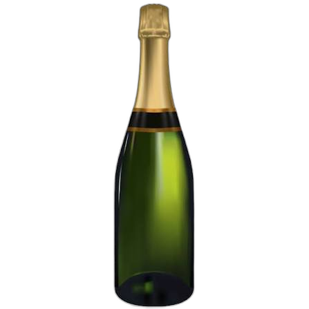
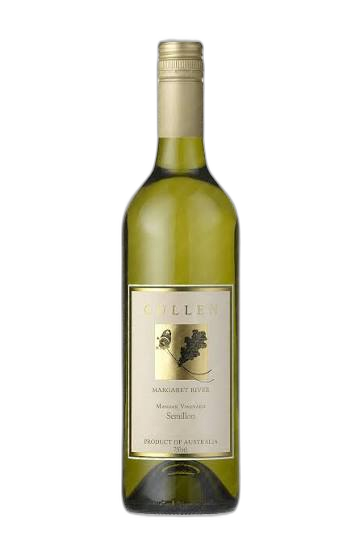
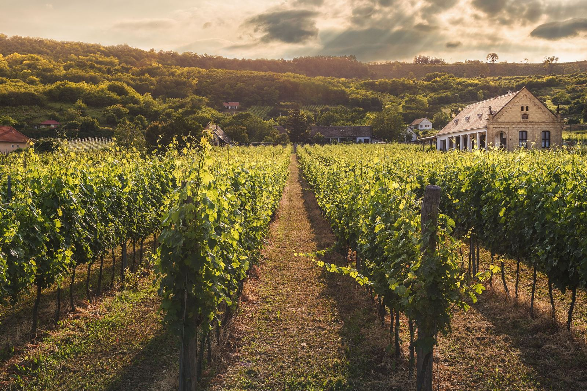
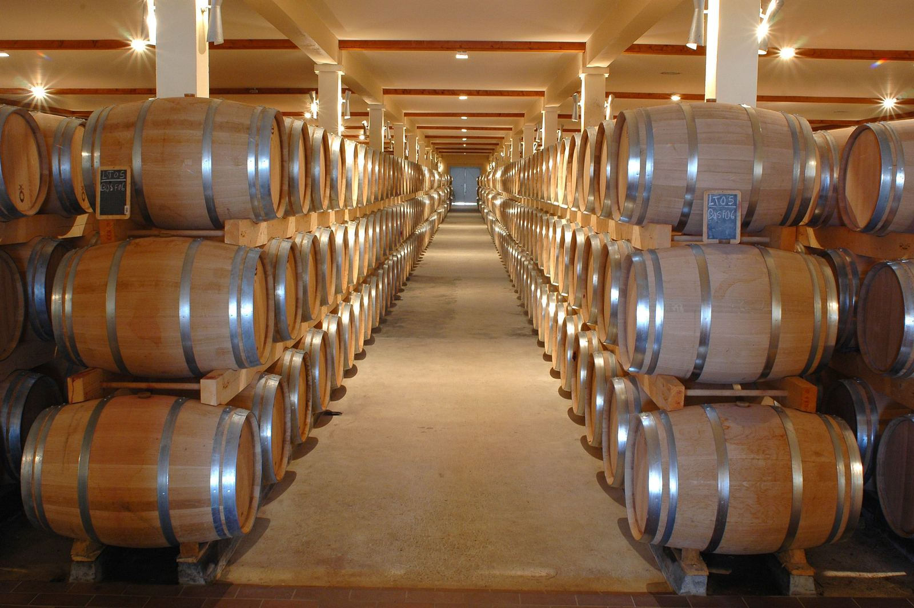
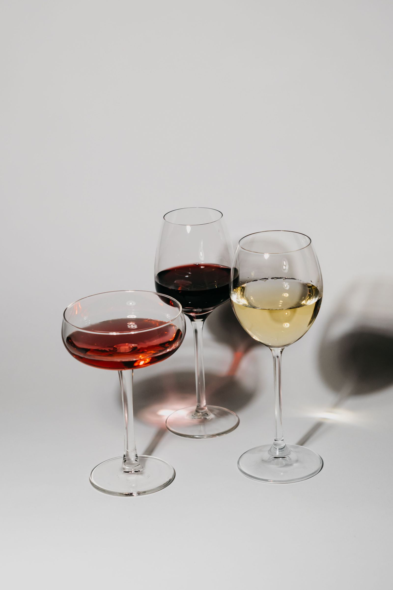
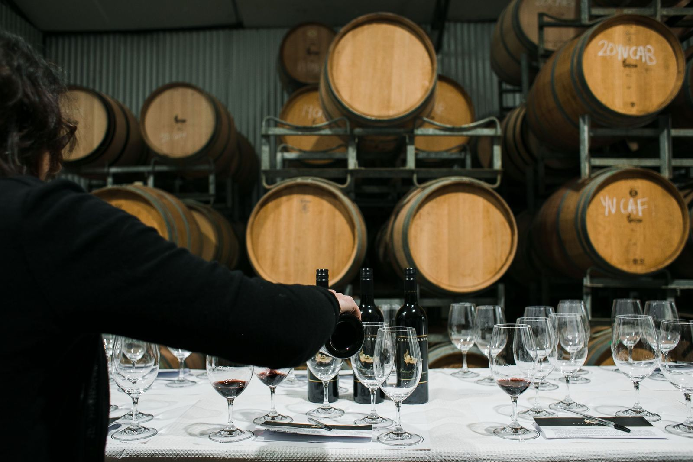
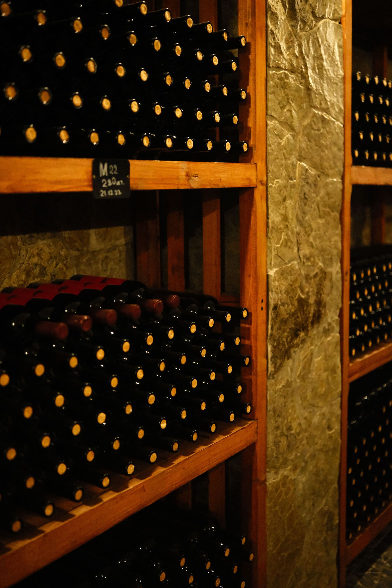
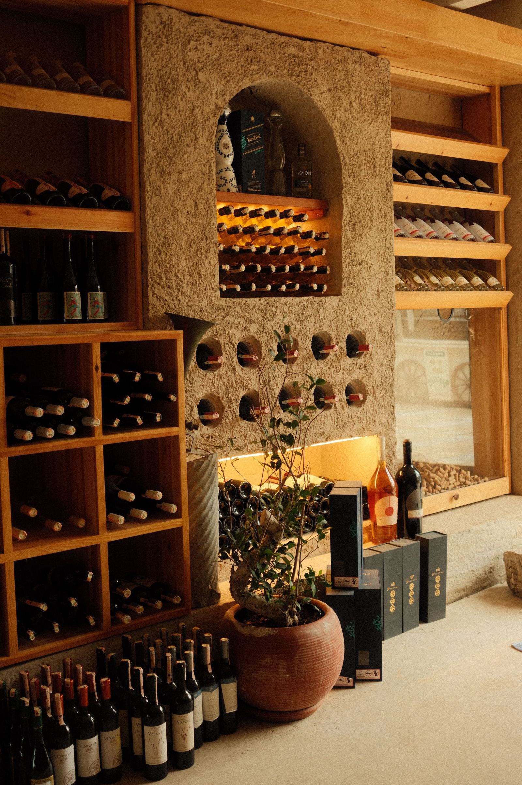

Todo el material es local
7 piezas del proyecto. Nada de banco de imágenes: video del campo y 6 fotos de sala, copas y cava.
Bodega
EmpezarPortfolio visual · 7 piezas locales
Un recorrido breve por paisaje, barricas y copas. Sin registro y sin prisa.
Foto y video locales · 3 ambientes · 2 min de lectura
La viña afuera. La madera adentro. El vidrio cerca. Un recorrido corto para mirar despacio.
Tocá una lateral para deslizarla al centro. El marco y la cinta cambian de color con cada vino.



Tres razones breves, cada una con su prueba al lado.
7 piezas del proyecto. Nada de banco de imágenes: video del campo y 6 fotos de sala, copas y cava.
Paisaje, interior y detalle. Bajás del campo a la sala y terminás en el vidrio, sin vueltas.
Puntos calientes en copas y botellas. Pasá el cursor o tocá para leer cada nota de cata.
Filas de viña en primer plano, construcciones rurales al fondo y colinas arboladas. La imagen está tomada con luz lateral cálida.

Pasillo central con barricas apiladas a ambos lados y luz cálida superior. La simetría lleva la vista hacia el fondo de la sala.

Dos momentos cercanos: copas aisladas sobre fondo claro y botellas con copas sobre una barrica.


Recorrido
Deslizá: la imagen principal cambia mientras avanzás por cada momento.



Pasillo con barricas apiladas a ambos lados.
Tres copas con líquidos de distinto color.
Botellas y copas sobre una barrica.
Copas servidas frente a barricas.
Estanterías junto a columna de piedra.
Madera cálida, botellas y una planta.
Las siete piezas locales reunidas, cada una con su encuadre.
1 / 7